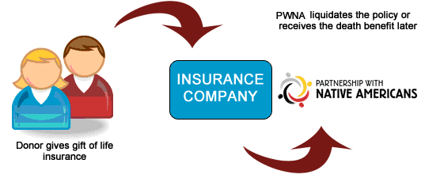

Your life insurance policy is usually an untapped and forgotten part of your financial planning. Yet it is a simple way to ensure the continued work of National Relief Charities.
There are many ways that your life insurance policy can benefit Native American people.
Options to donate your policy:
- You can name National Relief Charities as a beneficiary in your current life insurance policy.
- You can donate your paid-up policy directly to National Relief Charities.
- You can start a new policy, making National Relief Charities the owner and beneficiary.
Benefits for you:
- It does not affect you financially during your lifetime.
- There are potential income tax deductions if you transfer the policy to NRC.
- Estate taxes can be reduced if you name NRC as the beneficiary.
